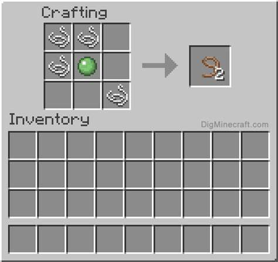

How to work with animals
1. First, you have to find animals that you want to keep. To get the
animal(s), you must have a leash. To craft a leash, you need 4 string and 1 slimeball
get string from spiders and slimeballs from slimes. put the slimball in the middle
the string on the bottom left, another on the top right, 1 bellow and 1 on the right of
top right corner.

2. You need to bulid a place to keep your animal(s) before you get the animal.
You do that by crafting fences. To craft a fence, you fill in the bottom 2 rows with
any type of wood planks exept for the middle collum of the bottom 2 rows, fill that row
in with sticks. You should get 3 fences, keep crafting fences until you have enough to make
your livestock place. Place down the fences in a rectangle shape. But leave 1 space empty
for gate. To craft a gate you fill the bottom 2 rows with sticks but the middle collum
of the bottom 2 rows fill that in with sticks. You should get 1 gate, place down the gate
in the empty space in your livestock pen. Tap the gate to open and close. Keep the
gate open while you go find your animal get a bring a leash and all the things you need to
survive.
3. When you find the animal(s) you want, walk close to it and a button should
appear, the button should be above your hotbar the button should say leash. Tap on
the button and you leash should be attached to the animal. Bring the animal back into the pen and
tap a fence, the leash should be attached to the fence. Exit the pen and close the gate.
If you have a wolf, you tame it with a bone, it will have a red collar when tamed. You can
make a wolf stand and sit when holding a bone by walking to it and tapping sit or stand.
If you have a oceleot, you tame it with any type of cooked fish, you make it sit and stand the
same way you do to a dog except with fish.
4. To breed animals, different animals have different foods. To breed wolves, you need any
type of raw meat. Feed the meat to 2 wolves by tapping a button that will appear, the button should
say feed. Feed the meat to the 1 wolf until hearts appear, then do the same with the other wolf.
They should walk into each other and hearts should appear. When they walk apart, a baby wolf should
appear next to them, if the wolfs parents are both tamed, the baby wolf is also tamed. If you breed
a pair of animals, you have wait a while before you can breed them again You can breed different
animals with diferent food. To breed an oceleot, use any raw fish. To breed